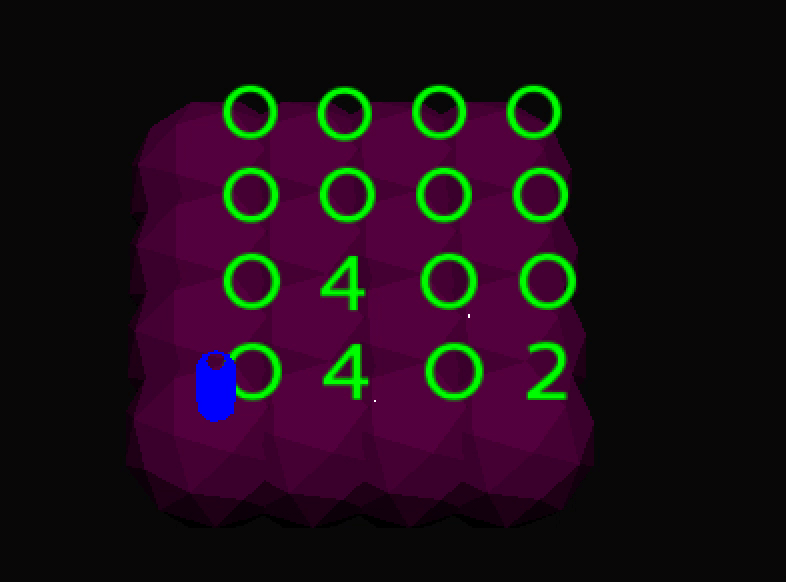

Everything's a graph
My name's Eric. Welcome to my blog. Hopefully you find some amusement or insight.
October 1, 2022
This one's for you, Leah <3

I'm writing to announce nx3d's 22.10.3 release.
If you want to get started immediately, you can replicate the GIF above by running the following from your command line:
pip install nx3d && python -m nx3d diffusion nolabel watt
- language: python3, 3.9, 3.10, 3.11
- license: MIT
- depends: loguru, networkx, numpy, panda3d
- repository: github
- package: pypi
- documentation: readthedocs
What you're looking at here is a diffusion process over a Watts-Strogatz graph. Specifically, it's a Watts-Strogatz
graph generated stochastically by the networkx package using: g = nx.watts_strogatz_graph(30, 3, 0.1).
You'll notice, if you can look past the spinning, that the colors of each node diffuse over time to neighboring nodes,
"smoothing out" the colors. My implementation of diffusion is a dead simple Markov process on the nodes' RGB values -
the color at each time step is the color at the previous step plus a small fraction of the nodes' neighbors.
You can do more with nx3d than just diffusion, though - here's a finite implementation of the Game of Life:

These examples aren't interactive - they're zero-player games after all. But you can make interactive visualizations
with nx3d. Here's the popular mobile game 2048 implemented on a gridded graph:

nx3d is built on a real 3D game engine, so you can get about as creative as you want. There's keyboard
feedback built in to the latest version to get up and running with your own interactive visualizations. And that's about
it, really - check out the docs for more info and happy hacking!